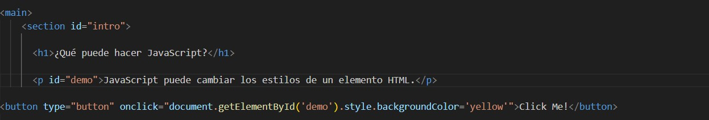

¿Qué puede hacer JavaScript?
JavaScript puede cambiar los estilos de un elemento HTML.
Código empleado:
Explicación:
En este ejemplo, cuando se hace clic en el botón "Click Me!", se ejecuta la función onclick que cambia el backgroundColor del elemento con el id demo a amarillo.
Cuando el usuario hace clic en el botón "Click Me!", la función onclick se activa. Utiliza document.getElementById('demo') para encontrar el elemento <p> con el ID demo. Una vez que se encuentra el elemento, cambia la propiedad style.backgroundColor del elemento a 'yellow', lo que hace que el fondo del párrafo se vuelva amarillo.